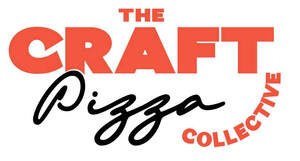

Trade Mark Journal No.2025/020 16 May 2025
UK00004189309 15 April 2025 (18,25,30,35,43)

- Class 18
- Bags; handbags; wallets; travelling bags; sports bags.
- Class 25
- Clothing, footwear, headgear; suits; baby clothes; outerwear; belts; neckerchiefs; gloves; shirts; blouses; trousers; braces; hats; jackets; dresses; costumes; ties; coats; caps; baseball caps; overalls; slippers; jumper; pyjamas; raincoats; skirts; sandals; scarves; pants; aprons; shorts; slips; socks; sports shoes; boots; headbands; cardigans; stockings; sweatshirts; T-shirts; polo shirts; underwear; knitted garments; leggings [trousers].
- Class 30
- Frozen pizzas; chilled pizzas; pizzas; frozen pizzas; deep-frozen bread and baguettes, both including toppings of sausage, ham, meat, cheese, vegetables, mushrooms, herbs and/or spices; deep frozen pasta, including pasta filled with sausages, ham, meat, cheese, vegetables, mushrooms, herbs and/or spices; frozen lasagne; pasta dishes; prepared meals containing [principally] pasta.
- Class 35
- Advertising; advertising on the internet, in social media and in mobile services; planning, design and implementation of advertising and sales concepts for sales promotion; publication of printed matter and online texts for advertising purposes, merchandising (sales promotion); distribution of product samples for advertising purposes; distribution of advertising material; organisation and implementation of advertising events; Organisation of exhibitions and trade fairs for advertising purposes; production of advertising films and radio advertising; public relations; marketing; management, company administration, management consulting; business management consulting; organisational consulting; wholesale and retail services (including online) connected with the sale of food, market analysis.
- Class 43
- Catering services; catering for guests in restaurants; catering for guests in fast-food restaurants; mobile catering; catering for guests with food and beverages, including take-away, by means of mobile restaurants [e.g. food trucks]; operation of food trucks; catering; accommodation services for guests.
Freiberger Lebensmittel GmbH
Representative: Appleyard Lees IP LLP